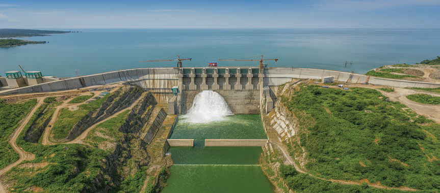
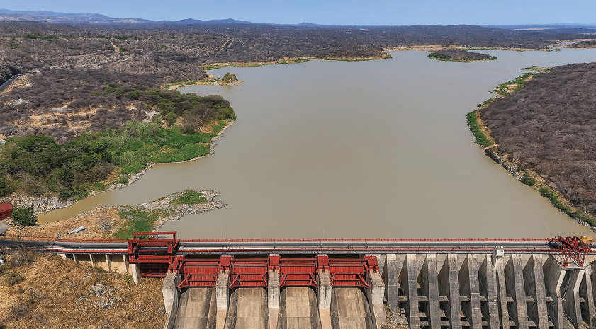

Kielelezo namba 4: Kituo cha kuzalisha umeme cha Julius Nyerere
Chanzo: https://www.tanesco.co.tz
Bwawa la Mtera
Bwawa hili linapatikana katika wilaya za Chamwino na Mpwapwa mkoani Dodoma na wilaya ya Iringa mkoani Iringa. Chanzo cha maji ya Bwawa la Mtera ni Mto Ruaha Mkuu. Bwawa la Mtera lina ukubwa wa kilomita za mraba 660 na ni miongoni mwa mabwawa makubwa yanayotumika kwa uzalishaji wa umeme kupitia Mradi wa Umeme wa Mtera. Pia, linasaidia katika kilimo cha umwagiliaji kwenye maeneo ya karibu. Kielelezo namba 5 kinawasilisha sehemu ya Bwawa la Mtera.

Kielelezo namba 5: Sehemu ya Bwawa la Mtera